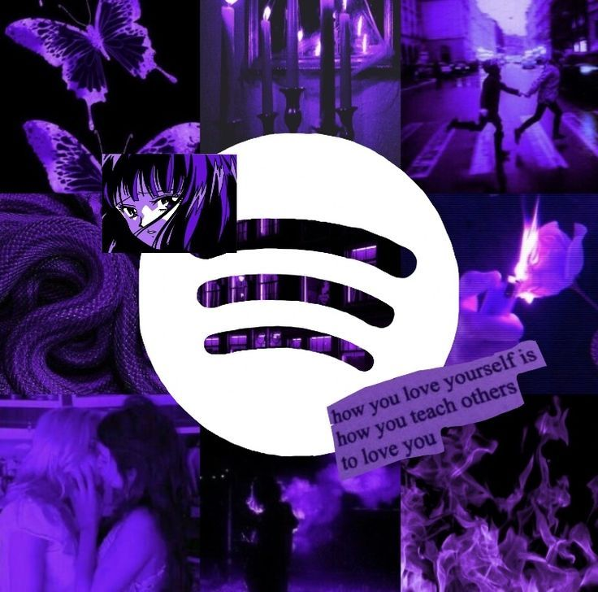
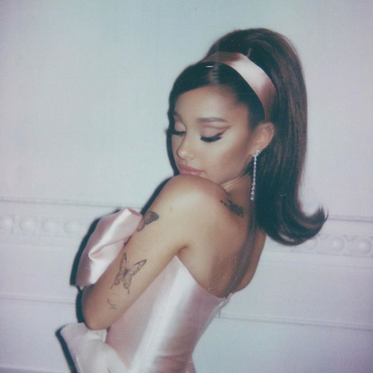
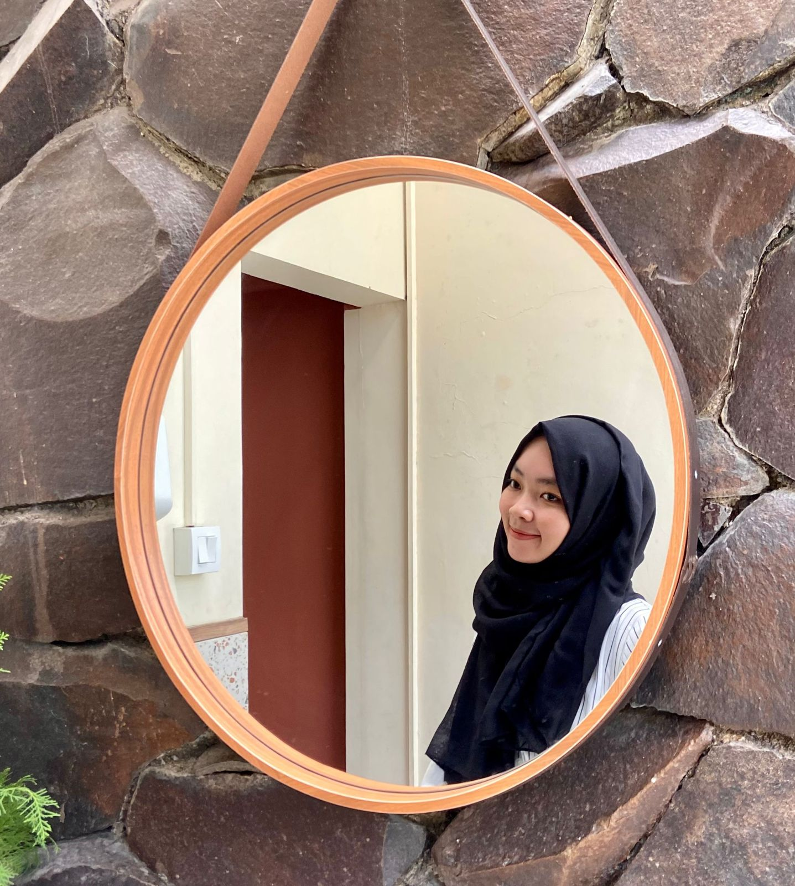

|  |
MUSIC |
Taylor Swift

Taylor Alison Swift adalah seorang penyanyi-penulis lagu berkebangsaan Amerika Serikat. Penulisan lagu naratifnya, yang sering berpusat di sekitar kehidupan pribadinya, telah menerima pujian kritis dan liputan media yang luas. Lahir di West Reading, Pennsylvania, Taylor Swift pindah ke Nashville, Tennessee pada usia 14 tahun untuk mengejar kariernya di musik country. Album studio debutnya yang bernama sama seperti namanya merupakan album tahun 2000-an terlama yang berada di Billboard 200.
Olivia Rodrigo

Olivia Isabel Rodrigo (lahir 20 Februari 2003)adalah seorang penyanyi dan aktris asal Amerika Serikat, yang di kenal karena perannya sebagai Paige Olvera di seri Disney Channel, Bizaardvark dan sebagai Nini Salazar-Roberts di seri Disney+, High School Musical: The Musical: The Series. Rodrigo menandatangani kontrak dengan label rekaman Interscope Records dan Geffen Records pada tahun 2020.
Ariana Grande
Ariana Grande-Butera adalah seorang penyanyi, penulis lagu, dan pemeran asal Amerika Serikat. Dia memulai kariernya pada tahun 2008 di drama musikal Broadway berjudul 13, sebelum memerankan Cat Valentine di serial televisi Nickelodeon Victorious (2010–2013) dan di spinoff Sam & Cat (2013–2014). Dia juga pernah tampil di berbagai teater dan peran televisi dan telah mengisi suara di beberapa serial televisi dan film. Karier musik Grande dimulai pada 2011 dengan lagu latar Music from Victorious. Pada tahun 2013, dia merilis album studio pertamanya Yours Truly, yang menduduki puncak Billboard 200 AS. Single utama album ini, "The Way", debut di 10 besar Billboard Hot 100.
Wave To Earth

wave to earth adalah band indie Korea beranggotakan tiga orang di bawah WAVY. Terdiri dari gitaris/penulis lagu Daniel Kim, drummer Dongkyu Shin dan bassis John Cha, grup ini memulai debutnya dengan single “wave” pada tahun 2019, diikuti oleh EP “wave 0.01” dan “summer flow 0.02” pada tahun 2020.
One Direction

One Direction adalah sebuah grup vokal Inggris-Irlandia berbasis di London, terdiri dari Niall Horan, Liam Payne, Harry Styles, Louis Tomlinson dan sampai keluarnya Zayn Malik tahun 2015 dari grup ini. Mereka dikontrak oleh kontrak rekaman Simon Cowell Syco Records setelah terbentuk dan selesai di posisi ketiga di musim ketujuh dari kompetisi menyanyi televisi Inggris The X Factor pada tahun 2010. .
About me

Anna Mutiana Rahman
NIM: 10123274
IF-7
Universitas Komputer Indonesia